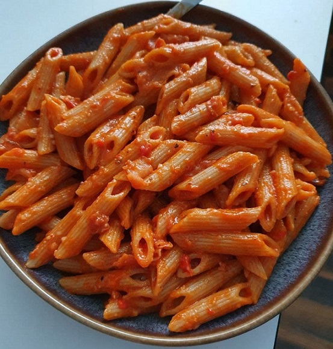

Spaghetti all'amatriciana
Ignore the fact that those in the photo are pennette and not spaghetti, that’s all I had that day.

- ⏲️ Prep time: 5 min
- 🍳 Cook time: 25 min
- 🍽️ Servings: 4
Ingredients
- Pecorino romano cheese preferably or Parmesan 1.5oz (40g)
- Fresh chili pepper (as many as you’d like)
- Extra virgin olive oil ¼ cup (40g)
- Guanciale preferably or Bacon 3.5oz (100g)
- White wine ¼ cup (60g)
- Tomato passata 10oz (300g)
- Spaghetti or similar long pasta 12oz (350g)
- (optional) Extra pecorino romano or parmesan
Directions
- Grate the pecorino and keep it aside.
- Mince the chili pepper(s) and keep it/them aside.
- Cut the guanciale in thin stripes and cook them in the oil with the minced pepper(s) for about 3 minutes on medium/high heat.
- Douse with the wine and turn up the heat. Cook until the alcohol has evaporated.
- Start cooking the pasta.
- Lower the heat to medium and add the passata, some salt and plenty of pepper. Cook for about 15 minutes.
- Once finished, drain the pasta and add the sauce and the pecorino/parmesan, mix well and serve immediately. Optionally you can add some pecorino or parmesan on top.
Contribution
- Jebusthebus